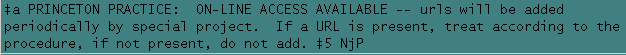

Print materials with associated online versions
Member and LC copy:
When cataloging a new print title, if the record contains an 856 field, determine if the online item is a monograph, serial or database. If the online version is anything other than a monograph: Refer it to the SERRM team for processing.
If it is a monograph:
If the information indicates that the link leads to a contents, index or abstract page or publisher’s page or other associated informational page, do not check the link, and leave the 856 field as is. Do not add a MFHD.
If there is no indication as to the nature of the link, or if it is indicated that the link leads you to a full text version, check the URL link:
- If it appears to lead to the full text, leave the link, but remove |z or |3 if present. (Subfield z is only retained in special cases.)
- The record should have a 530 note. Accept the wording on the record or add the following:
- Add an elf1 MFHD with |h Electronic Resource.
- If it leads to abbreviated data, confusing data, or if the link doesn’t work, remove the entire 856 field.
Original:
If you know there is an electronic version, or you discover, in a brief inspection of the item, that there is an electronic version, make an attempt to find the URL for the e-version. Add the 530 "Also available in an electronic version" note, and, if you found a URL, also add an 856 field and a MFHD for location elf1 with |h Electronic Resource for the call number.
NOTES:
- If a 530 note indicating an online version is present, but there is no 856 field, leave the note in and do not search for the URL.
- Some series which are on standing order provide electronic access to all titles within the series (Example: Methods in Molecular Biology). Follow the 667 note on the series authority record--usually this will not require adding the URL at time of cataloging

- If separate cataloging for an electronic version is requested by a selector, refer the request to the SERRM team.
- URLs which link to one of our E-Book packages, such as Ebrary, or Books 24x7, are not part of this procedure and an 856 should not be added for them. These e-books are cataloged separately from their print counterparts.
- Remove 5xx fields which relate specifically to another institution.
- In cases of doubt, refer the item to the SERRM team.